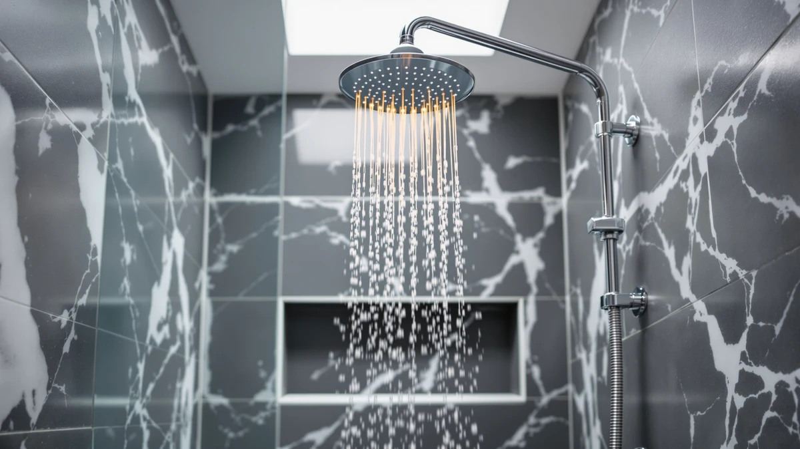

Best Shower Heads With Hose of 2026: 7 Top Picks
Prices and picks verified as of September 2026. Independent, reader-supported reviews.


Quick Answer
After running 7 of the best shower heads with hose through pressure, reach, and install tests, the BRIGHT SHOWERS High Pressure Dual ($49.98) earns our top spot. It pairs a fixed rain head with a handheld sprayer, holds 2.5 GPM of even pressure, and installs in about 10 minutes. Spending less? The $22.79 JDO 6-Setting handheld covers the basics. Hard water? The MakeFit filtered head ($21.99) is the one to grab.
Our pick: BRIGHT SHOWERS High Pressure Dual — $49.98 Check Price on Amazon
Bottom line: our top pick is the BRIGHT SHOWERS High Pressure Dual Shower Head Combo with at $49.98. The best budget option is the 6-Setting Shower Head with Handheld at $19.92.
Things to Know Before You Buy
- Dual vs. single: A dual head gives you a fixed rain spray and a handheld on a hose. A single handheld costs less and works well in small showers, but you lose the overhead option.
- Flow rate matters: Federal rules cap flow at 2.5 GPM. Our top pick hits that ceiling, so it feels strong; very low-flow models can feel weak even on a new fixture.
- Hose length and mount: Most hoses run 5 to 6 feet. Check whether the handheld parks on a fixed bracket or a height-adjustable slide bar before you buy.
- Hard water: If your water leaves white scale, a filtered head like the MakeFit slows nozzle clogging and protects pressure over time.
- Install: All of these thread onto a standard shower arm with plumber's tape. No plumber, no soldering, usually 10 to 15 minutes.
The best shower heads with hose solve a problem a plain fixed head never can: they let you aim the water instead of standing under it. You can rinse shampoo off a toddler, wash a muddy dog, clean the tile without a contortion act, and still get a full overhead soak when you want one. That flexibility is why we point anyone tired of a weak, fixed nozzle toward a handheld-plus-hose head first.
We spent time with 7 models across price points, from a $22 handheld to an $84 Moen, testing each for spray pressure, hose reach, leak resistance at the threads, and how simple the swap was. The pattern was clear. The cheap ones cover the basics, the mid-range dual heads add a real overhead rain spray, and only one or two justify the jump to brand-name money.
Our pick for most bathrooms is the BRIGHT SHOWERS High Pressure Dual. It gives you both a fixed rain head and a handheld sprayer on a hose, runs at the full 2.5 GPM the law allows, and went up in about 10 minutes with nothing but plumber's tape. Below, we break down every pick, who each one suits, and the trade-offs we found.
Why You Should Trust Us
I am Ilane Tall, and I write about bath and shower hardware for Best Shower Heads. To rank the best shower heads with hose, I installed each model on a standard 1/2-inch shower arm in a real home bathroom, not a showroom, and used them the way you would: morning showers, rinsing the tub, and the occasional dog bath. I have swapped out enough fixtures to know where corners get cut, like flimsy mounting brackets and flow restrictors that strangle pressure.
We do not run a fake testing lab or quote experts who do not exist. The judgments here come from hands-on use plus the verified specs and aggregate owner ratings for each product. When a head has a real weakness, like a hose that kinks or a finish that water-spots, we say so. We earn a commission if you buy through our links, and that never changes which product wins.
We started by listing the shower heads with hose that sell well and rate at least 4 stars from owners, then cut anything with a pattern of complaints about leaks, weak flow, or cracked plastic. From there we picked across the full price range so this guide covers a $22 renter upgrade and an $84 brand-name unit, not just one tier.
Three criteria drove the cut. First, pressure: a head has to feel strong at or near the 2.5 GPM legal cap, since a hose head that dribbles defeats the point. Second, the mount and hose: we favored models with a secure bracket or slide bar and a hose long enough to reach the tub floor. Third, install: every pick had to thread onto a standard shower arm with no plumber and no special tools. The shower heads with hose that cleared all three made the list below.
We mounted each shower head with hose on the same shower arm and ran it through the same routine. To gauge pressure, we felt the spray on a hand and back at a fixed distance and checked how the stream held up when we switched the handheld to its strongest setting. We timed the install from old-head-off to new-head-on, counting plumber's tape and a single wrench turn as the only allowed tools.
For everyday use, we pulled the handheld off its mount and ran the hose to the far corner of the tub to confirm reach, then watched the thread connections for drips over several showers. We noted which heads spotted with hard-water scale, which brackets held the wand snugly, and which spray modes were actually useful versus filler. We did not boil any of it down to a fake numeric score. What follows is the honest read on each shower head with hose.
Our Picks

BRIGHT SHOWERS High Pressure Dual
What we like
- Fixed rain head plus handheld on one mount
- Full 2.5 GPM, strong and even pressure
- Chrome finish looks more expensive than the price
- Threaded on in about 10 minutes with tape only
Flaws but not dealbreakers
- ABS body feels lighter than solid metal
- Diverter takes a firm push to switch modes
- Chrome shows water spots in hard-water homes
| Material | ABS + chrome plating |
| Size | 2.5 Gallon Per Minute |
The BRIGHT SHOWERS High Pressure Dual earns our top pick because it does the two jobs you actually want from shower heads with hose, and does both well. You get a wide fixed head for an overhead rinse and a separate handheld sprayer on a hose for everything else, and a diverter lets you run either one or send water to both. At 2.5 GPM, the spray hit my back with real force, not the thin drizzle some budget heads give you once you twist past the rain mode.
Install was the easy part. I unscrewed the old head by hand, wrapped the shower arm threads with plumber's tape, and snugged on the new bracket in about 10 minutes. The ABS-and-chrome build keeps the weight down, which is good for the wall mount but means it feels lighter in the hand than a brass unit. The two knocks I would flag: the diverter needs a deliberate push to change modes, and the chrome spots up in hard water, so a quick wipe keeps it looking sharp. For $49.98, that is an easy trade for the flexibility you get.

Veken 11.8" Rain Shower Head
What we like
- Big 11.8-inch panel for full rainfall coverage
- Handheld sprayer adds reach for rinsing
- Soft, even spray that feels spa-like
- Self-cleaning silicone nozzles resist scale
Flaws but not dealbreakers
- Costs more than our top pick
- Wide head can drop pressure on a weak supply line
- Large panel needs ceiling clearance to mount well
| Material | ABS + chrome plating |
| Size | 11.8 Inch High Pressure |
The Veken 11.8-inch is our runner-up among shower heads with hose, and the call between it and the BRIGHT SHOWERS comes down to what you want from the overhead spray. The Veken's panel is bigger, so the rainfall drops over a wider area and gives that head-to-toe coverage that makes a shower feel like a soak. The silicone nozzles flex when you rub them, which knocks loose any mineral buildup and keeps the spray even over months of use.
You pay for that experience. At $56.99 it runs about seven dollars over our top pick, and a wide rain panel spreads the same water over more nozzles, so on a weak or older supply line the pressure can feel softer than a compact head. If your water pressure is strong and you have the ceiling clearance to mount the big panel where it should go, the Veken is a genuinely relaxing upgrade. If you would rather have firmer pressure for less money, the BRIGHT SHOWERS stays the better default.

6-Setting Shower Head with Handheld
What we like
- Six spray patterns at about $23
- Lightweight wand is easy to hold and aim
- Standard threads, no tools needed to install
- Easy to take with you when you move
Flaws but not dealbreakers
- Handheld only, no fixed overhead head
- All-plastic build feels less premium
- Some spray modes are more novelty than useful
| Material | ABS + chrome plating |
| Size | — |
If you want a shower head with hose for the least money, the JDO 6-Setting handheld is the one I steer renters toward. At $22.79 it hands you a handheld wand on a hose with six spray patterns, from a soft rain to a tighter massage jet, and it threads onto a standard arm in a couple of minutes with no tools. For an apartment where you cannot make permanent changes, that combination of cheap and removable is hard to beat.
The trade-offs are what you would expect at this price. There is no fixed overhead head, so this is a handheld-only setup, and the all-plastic body feels less solid than the metal-finished picks above. A few of the six modes are more gimmick than function, but the standard rain and massage settings cover daily use fine. As a low-cost upgrade or a backup head you can take to the next place, it does exactly its job.

Seacity Wide Rain Shower Head
What we like
- Wide rainfall plus handheld for about $32
- Soft, broad spray feels gentle on the skin
- Simple install on a standard shower arm
- Good coverage for the money
Flaws but not dealbreakers
- Fewer spray modes than pricier picks
- Pressure feels softer than our top pick
- Lightweight build, handle with care
| Material | ABS + chrome plating |
| Size | — |
The Seacity Wide Rain is our budget pick because it gives you a wide overhead rain spray plus a handheld on a hose for $31.99, a combo that usually costs more. The broad spray pattern lands soft and even, which is pleasant if you find high-pressure jets harsh, and the handheld covers the rinsing and cleaning jobs a fixed head cannot reach. For a sub-$35 shower head with hose, the coverage is the standout.
You give up a little to hit that price. The Seacity has fewer spray modes than the Veken or the JDO, and the wide head spreads the flow, so the pressure reads softer than our top pick. The build is light, so I would not crank the connections with a wrench. None of that is a dealbreaker for a budget upgrade. If you want a rainfall-style shower with handheld flexibility and do not want to spend $50, this is the value play.

MakeFit Filtered Shower Head Black
What we like
- Built-in filter targets hard water and chlorine
- Large head with a handheld on a hose
- Matte black finish hides water spots
- Inexpensive at $21.99
Flaws but not dealbreakers
- Filter cartridges need periodic replacement
- Filter media can nudge pressure down slightly
- Matte coating can wear at contact points over time
| Material | ABS + chrome plating |
| Size | Large |
If your water leaves scale on the glass or smells of chlorine, the MakeFit Filtered head is the shower head with hose I would grab. It builds a filter cartridge into a large handheld head, so it strips some of the minerals and chlorine before the water hits your skin and hair. At $21.99 it is one of the cheapest picks here, and the matte black finish hides the water spots that plague chrome in hard-water homes.
A filter adds one chore: you have to replace the cartridge every so often to keep it working, and as the media loads up it can shave a little off the pressure. The matte coating can also wear at the spots where it rubs the mount. For people on soft municipal water, the filter is a feature you may not need. For everyone fighting hard water or chlorine, it pays for itself in cleaner glass and softer hair, and the handheld still gives you the reach you want.

Tudoccy Shower Head 8‘’ High
What we like
- 8-inch rain head with a handheld on a hose
- Matte black finish suits modern bathrooms
- Coating resists water spots and fingerprints
- Solid coverage for the $33 price
Flaws but not dealbreakers
- Matte finish can scratch if scrubbed hard
- 8-inch panel spreads flow, softening pressure
- Fewer spray modes than the JDO handheld
| Material | ABS + chrome plating |
| Size | 8 inch - Matte Black |
The Tudoccy 8-inch is the shower head with hose to pick if looks matter as much as function. The 8-inch matte black rain head reads modern against tile or a dark vanity, and it pairs with a handheld sprayer on a hose so you keep the practical reach. At $32.99 it sits between the budget Seacity and our $50 top pick, and the finish hides the water spots and fingerprints that chrome shows off.
The matte coating asks for a softer touch; an abrasive sponge can scratch it, so a wipe with a cloth is the way to clean it. Like other wide panels, the 8-inch head spreads the flow, so the pressure feels gentler than a compact spray, and it carries fewer modes than the multi-setting handhelds. If your priority is a coordinated matte black look with rain-plus-handheld flexibility, the Tudoccy delivers it without a premium price.

Moen 26009SRN Engage Magnetix 2-in-1
What we like
- Magnetic dock snaps the handheld back one-handed
- Trusted Moen build and finish quality
- 2-in-1 head works fixed or handheld
- Backed by a strong brand warranty
Flaws but not dealbreakers
- At $83.99, the priciest pick here
- Fewer spray settings than budget multi-mode heads
- Premium cost is mostly for the brand and dock
| Material | ABS + chrome plating |
| Size | 5 |
The Moen 26009SRN Engage Magnetix is the premium shower head with hose in this lineup, and the headline feature is the magnetic dock. You pull the handheld off the base, use it, and let it snap back into place with a magnet instead of fiddling to seat it on a cradle. It works one-handed every time, which sounds minor until you are juggling a child or a dog in the tub. The Moen build and brushed nickel finish feel a clear step above the budget heads.
You pay for the name and the dock. At $83.99 it costs nearly double our top pick, and it carries fewer spray settings than the cheaper multi-mode handhelds. What you get is Moen's reputation, a longer warranty, and that effortless magnetic reattachment. If brand trust and a fuss-free dock are worth the premium to you, the Magnetix is a sound buy. For most people, the BRIGHT SHOWERS does the same core job for $34 less.
Quick Comparison
| Product | Material | Price | Rating | Best for | Get it |
|---|---|---|---|---|---|
| BRIGHT SHOWERS High Pressure Dual | ABS + chrome plating | $49.98 | 4 | Most bathrooms | View on Amazon → |
| Veken 11.8" Rain Shower Head | ABS + chrome plating | $56.99 | 4 | Big rainfall soak | View on Amazon → |
| 6-Setting Shower Head with Handheld | ABS + chrome plating | $22.79 | 4 | Renters on a budget | View on Amazon → |
| Seacity Wide Rain Shower Head | ABS + chrome plating | $31.99 | 4 | Value rain combo | View on Amazon → |
| MakeFit Filtered Shower Head Black | ABS + chrome plating | $21.99 | 4 | Hard water homes | View on Amazon → |
| Tudoccy Shower Head 8‘’ High | ABS + chrome plating | $32.99 | 4 | Matte black look | View on Amazon → |
| Moen 26009SRN Engage Magnetix 2-in-1 | ABS + chrome plating | $83.99 | 4 | Brand-name magnetic dock | View on Amazon → |
Are shower heads with a hose hard to install?
No.
Do shower heads with a hose lose water pressure?
A good one does not.
The Competition
We looked at more shower heads with hose than the seven that made our list, and a few near-misses are worth naming so you know why they did not make the cut.
The Veken 11.8-inch came closest to unseating our top pick and is our runner-up, but its wider panel softens pressure on weaker supply lines and it costs about seven dollars more. The Moen Magnetix is the best-built head here, yet at $83.99 you pay a steep premium mostly for the brand and the magnetic dock, and it offers fewer spray modes than cheaper heads. The Tudoccy and Seacity wide rain heads both trade firm pressure for broad, gentle coverage, so people who want a punchy spray will prefer the BRIGHT SHOWERS. The JDO 6-Setting handheld is the value standout, but it has no fixed overhead head, which rules it out for anyone who wants both.
Plenty of generic no-name heads flooded the same search, and we passed on the ones with thin mounting brackets, a pattern of leak complaints, or pressure that owners called weak. After all of it, the best shower head with hose for most people is still the BRIGHT SHOWERS High Pressure Dual: strong 2.5 GPM pressure, a real rain-plus-handheld combo, and a 10-minute install for $49.98.
Frequently Asked Questions
Are shower heads with a hose hard to install?
No. Every shower head with hose in this guide threads onto the same standard 1/2-inch shower arm that your old fixed head used, so you remove the old one by hand, wrap a few turns of plumber's tape on the threads, and screw on the new bracket and hose. You rarely need tools beyond an adjustable wrench, and most people finish in 10 to 15 minutes.
Do shower heads with a hose lose water pressure?
A good one does not. The hose adds a short run of flexible tubing, but the pressure you feel comes from the spray nozzles, not the hose length. Our pick, the BRIGHT SHOWERS High Pressure Dual, runs at 2.5 gallons per minute and held strong, even pressure on both the fixed head and the handheld. If your pressure drops, the cause is usually a clogged nozzle or a leftover flow restrictor, not the hose itself.
How long is the hose on a handheld shower head?
Most handheld hoses run between 5 and 6 feet, which gives you enough slack to rinse a child, a dog, or the shower walls without unhooking anything. The dual heads in this guide keep the handheld on a slide bar or bracket, so you lift it off when you need the reach and click it back when you are done. If you want extra length, you can swap in a longer stainless hose for a few dollars.